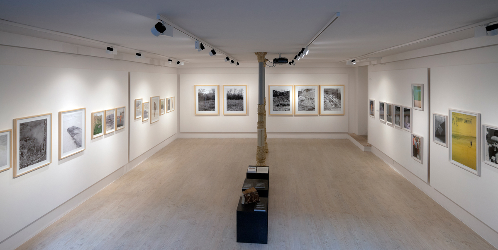
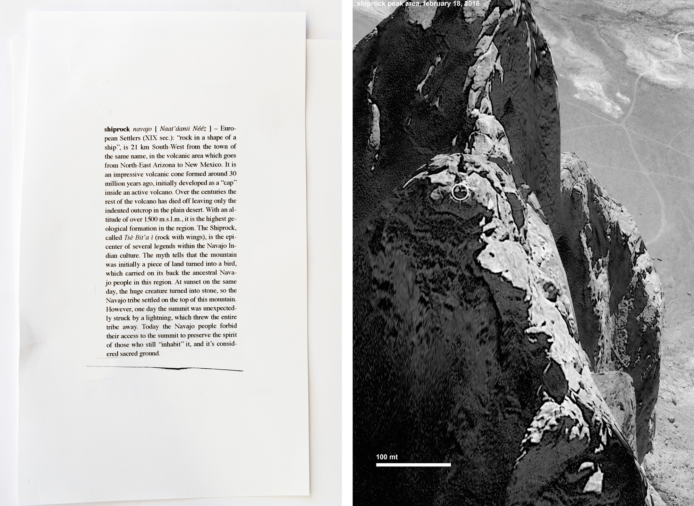

Daniele Lisi
Dopo gli studi di Visual e Motion Design presso l’Accademia di Belle Arti di Urbino Fotografia presso
l’Università IUAV di Venezia con il fotografo G.Guidi, dal 2009 si occupa di Fotografia ed Editoria, con
un’attenzione particolare alla cultura dell’immagine contemporanea. Lavora come Fotografo professionista
per
aziende private e committenti pubblici, occupandosi anche di editoria per l’Architettura, l’Archeologia
Industriale e le Arti Visive.
Attraverso un metodo progettuale integrato ha collaborazioni aperte con Studi di Comunicazione, Designer
Architetti e Liberi professionisti attivi nei campi studio del Paesaggio, della Comunicazione visiva e
del
Design.
È tra i fondatori di Silverbook Produzioni e co-fondatore del progetto d’identità territoriale
Lungofiume
Project (Fiume Marecchia, Rimini), assieme alla designer Ilaria Montanari.
Dal 2012 al 2015 è stato Content Editor per la sezione OFF del festival internazionale di Fotografia
“SI
Fest” di Savignano sul Rubicone.
ELENCO MOSTRE (Selezione)
2019 “A time to Resume AA.VV, Ala nuova, Museo della Città di Rimini
2018 “Minute”, a cura di Silverbook Produzioni, Galleria S.Croce, Cattolica
2017 “Fahrenheit 39 Art Book Fair”, Arteficerie Almagià, Ravenna
2017 “Oltre i luoghi”, AA.VV, a cura di Silverbook Produzioni, Museo della Città, Rimini
2016 “Lungofiume Project”, AA.VV, a cura di Silverbook Produzioni, Museo della Città, Rimini
2016 “Lungofiume luogo d’anime”, AA.VV, Galleria SP3, Treviso
2015 “Morphine Experience”, AA.VV, Ala nuova, Museo della Città, Rimini
2015 “Sono stato lì, F4 Un’idea di Fotografia”, a cura di Stefano Munarin e Andrea Petroldeo,
Villa
Brandolini, Treviso, Osservatorio Fotografico, Ravenna
2015 “Cluster New Jersey Counties”, Chiostri di S.Domenico, Festival di Fotografia Europea, Reggio
Emilia
2014 “Lungofiume luogo d’anime”, Atlante Italiano, SI Fest 23, Savignano sul Rubicone
2013 “Il volto è l’altro, l’altro siamo noi” a cura di Natascia Soannini, Musei comunali Rimini
2012 “Anteprima “Il volto è l’altro, l’altro siamo noi” a cura di Natascia Soannini, Spazio Duomo,
Rimini
2010 “Pasta di Romagna - impronte di fabbrica”, Galleria S.Croce, Cattolica
2010, Pasta di Romagna Impronte di Fabbrica, Galleria S.Croce, Cattolica
2008 “Turismi” AA.VV, a cura di Gigliola Foschi, Villa Mussolini, Riccione
2008 “Architettura Informale”, Galleria dell’Immagine, Rimini
ELENCO PUBBLICAZIONI (selezione)
Turismi, AA.VV, Silverbooks Edizioni, 2008
Pasta di Romagna Impronte di Fabbrica, PPV, 2010
Lungofiume Concept album, Silverbooks Edizioni, 2014
Cluster Concept album, Silverbook Produzioni, 2015
Lungofiume Luogo d’anime, Silverbook Produzioni, 2016
Oltre I luoghi AA.VV, Editrice Quinlan, 2018
Read more...
CLUSTER
“Si costruisce mentre si vive e si vive mentre si costruisce: la domanda di
architettura e quella di urbanistica nascono insieme, al punto che un essere “naturale” dell’uomo
risulta introvabile: l’umano.” F. Riva (a cura di), Leggere la città, 2013.
Giorgio Conti, Edificare e narrare si con-fondono?, in catalogo Fotografia Europea
“Effetto terra”, pp.95-97, Silvana Editoriale, 2015
Cluster - New Jersey Counties è un progetto-studio sull’ambiente urbano delle contee di Bergen,
Passaic, Essex e Hudson del New Jersey U.S.A. e le connessioni sociali e culturali che determinano
la vita e lo sviluppo dei grandi centri sub-urbani americani. Il lavoro è diviso in due capitoli con
un primo studio guidato da immagini che ritraggono incroci di lunghe vie deserte nel ore notturne.
Un ambiente che potremmo definire “Spazio fisico” (Hanry Lefavbre la trialettica dello spazio).
Il secondo capitolo mostra, attraverso l’elaborazione di mappe 3D e immagini satellitari gli stessi
luoghi descritti nel primo capitolo, qui sottoposti ad una scomposizione degli elementi primari che
costituiscono il paesaggio urbano un tempo occupato da colline e paludi.
Case, giardini, campi da football, automobili e piscine, diventano così
miniature parte di minuscoli diorami, catalogate, numerate e presentate su 18 tavole fotografiche
che riflettono, in diversa maniera i rapporti sociali e culturali che generano e allo stesso tempo
determinano questi luoghi, dove la bandiera americana issata ogni mattina, l’automobile parcheggiata
a fronte strada, la casa o il villino con piscina, un giardino imponente o uno più discreto,
rivelano senza indugi uno status sociale definito.
Read more...


LUNGOFIUME
Lungofiume luogo d’anime è un progetto editoriale che racchiude al suo interno le
sequenze fotografiche di quattro autori (Piero Delucca, Daniele Lisi e Flavio Marchetti)
realizzate
nei territori della Valmarecchia, dalla fonte alla foce del Fiume Marecchia (Emilia Romagna).
L’intento, nella sua essenza, è quello di partire dalla conoscenza della realtà del luogo per
incontrare l’idea che lascia nella mente del visitatore (quasi alla maniera di Paolo Conte
“…Genova
per noi è un’idea come un’altra…”); ognuno degli autori, con il suo lavoro, esprime in termini
di
immagini quanto suggeritogli dal paesaggio, dall’architettura e dalla gente che abita quei
luoghi e
li determina.
Nulla di naturalistico, né di documentaristico, ma piuttosto l’inseguimento di suggestioni
mentali
espresse in immagini capaci, nella loro autonomia, di rappresentare essenze riconducibili ad
un’idea, ad un concetto, ad un simbolo, oppure solo ad uno stato di cose libero da ogni
suggestione
formale ripetitiva e stereotipata.
Read more...


MINUTE
Minute è un progetto espositivo che per questa occasione ha coinvolto il cacciatore
di UFO locale Quinto Narducci. Minute raccoglie un work in progress che porterà alla
realizzazione compiuta di un nuovo lavoro.
Contiene gli appunti, gli stralci intermedi, una nuova declinazione
di
ciò che SBP definisce come “nuova documentazione”. In sintesi “smaterializzazione mentale” dei
luoghi e della coerenza temporale. Il rincorrere consapevole dell’apparente non sense o della
libera
forma, tra fluidità e indeterminazione, ha condotto alla collaborazione anche con Quinto
Narducci,
che astrae il piano reale verso piattaforme “cosmiche”.
Nel medesimo territorio che ci unisce, l'universo.
Read more...
SHIPROCK
“This is the place - Shiprock serie 1998-2016” è un progetto sulle
“Photodicerie”,
ma è anche un lavoro sui luoghi e un luogo specifico (“Shiprock” New Mexico, U.S.A.) in
relazione
alla sua rappresentazione digitale.
Servendosi di immagini acquisite da mappe digitali e geo-render, il lavoro si ispira alla più
nota
delle leggende Navajo che accompagnano Shiprock “roccia a forma di nave”:
Il mito narra che la montagna fu inizialmente un pezzo di terra tramutatasi in uccello, che
trasportò sul proprio dorso il popolo ancestrale dei Navajo in questa regione.
Al tramonto di quello stesso giorno, l’enorme creatura si trasformò in pietra e fu così che la
tribù
dei Navajo si stabilì sulla cima di questa montagna. Un evento in particolare determinò la
sacralità
del luogo quando la cima della roccia fu inaspettatamente colpita da un fulmine, che
nell’impatto
scagliò via l’intera tribù. Oggi il popolo dei Navajo ne proibisce l’accesso in vetta per
preservare
lo spirito di coloro che ancora la “abitano”, ed è considerata terreno sacro.
Il lavoro va alla ricerca delle presunte tracce lasciate dagli avvenimenti sopra citati,
utilizzando
software quali Planet e Google Earth come chiave di volta per un linguaggio iper-descrittivo,
utilizzato in larga misura anche dai siti web home made più disparati che trattano teorie e
leggende
popolari.
Il soggetto reale dell’immagine si con-fonde con la “sporcizia digitale”, il glitch,
l’interferenza
e l’errore fotografico, generato dalla naturale evoluzione del medium tecnologico e che proprio
per
questa ragione stimola un senso di *pareidolia continuo, che “guida” alla ricerca di una forma a
noi
conosciuta, che possa dar senso a ciò che in apparenza non lo ha.
*È la tendenza istintiva e automatica a trovare strutture ordinate e forme familiari in
immagini
disordinate; l'associazione si manifesta in special modo verso le figure e i volti umani.
Read more...

